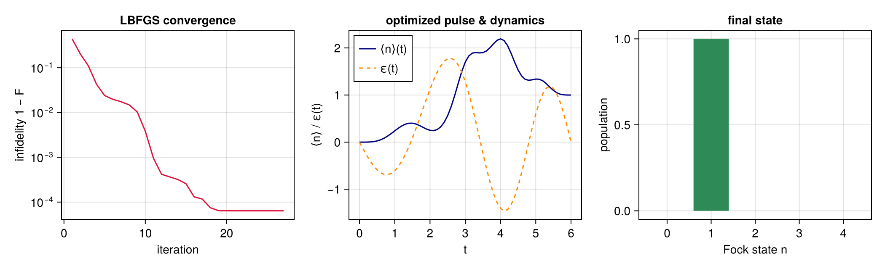
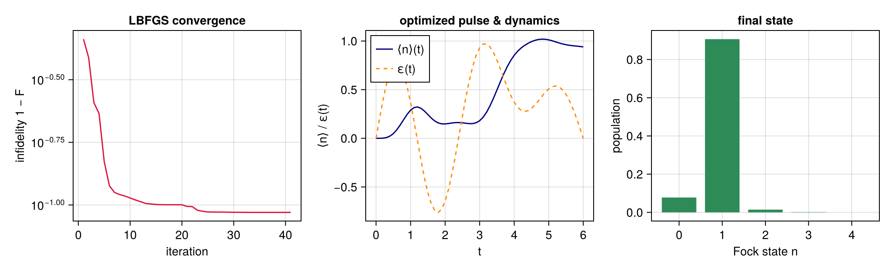

Differentiable Quantum Optimal Control
Gradient-based quantum optimal control means shaping a control pulse, evolving the state, measuring how far the final state is from a target, and descending the gradient of that error with respect to the pulse parameters. Two packages divide the work:
SecondQuantizedAlgebrais the symbolic layer. You write the Hamiltonian and operators symbolically, with the control entering through atime_parametervalue function(p, t) -> valueof the solver parameter vectorpand timet.to_numericcompiles that symbolic expression into the numeric operator (aQobjEvo) the solver consumes. Becausepis threaded into its coefficients, that operator is differentiable with respect top. No manual operator assembly is needed.QuantumToolboxis the numeric engine. It solves the dynamics and, through the SciMLSensitivity adjoint machinery with a reverse-mode backend such as Mooncake or Enzyme, differentiates the solve with respect top. This is specific to the QuantumToolbox backend; the QuantumOpticsBase backend has no solver parameter vector to differentiate against.
We solve the same task twice: first as a closed system with sesolve, then, after adding photon loss, as an open system with mesolve. The task is single-photon state preparation in a Kerr resonator. The Kerr nonlinearity shifts the $1 \to 2$ transition out of resonance (photon blockade), so a resonant drive can pump $0 \to 1$ but not beyond. We optimize the drive pulse to reach the Fock state $|1\rangle$ from vacuum.
Setup
The control Hamiltonian in the frame rotating at the drive frequency is
\[H(t) = \Delta\, a^\dagger a + \frac{K}{2}\, a^\dagger a^\dagger a a + \varepsilon(t)\,(a^\dagger + a),\]
with detuning $\Delta$, Kerr strength $K$, and a real control $\varepsilon(t)$.
using SecondQuantizedAlgebra
using QuantumToolbox
using Symbolics
using SciMLSensitivity
import Mooncake # loads the Mooncake reverse-mode backend
using DifferentiationInterface: AutoMooncake
using Optimization, OptimizationOptimJL
h = FockSpace(:c)
@qnumbers a::Destroy(h)
@variables Δ K ε κ\[ \begin{equation} \left[ \begin{array}{c} \Delta \\ K \\ \varepsilon \\ \kappa \\ \end{array} \right] \end{equation} \]
Physical constants and control discretization. The pulse is a Fourier sine series, which is smooth and vanishes at both ends of the interval, and its amplitudes are the parameters we optimize.
N = 10 # Fock cutoff (Hilbert dimension N + 1)
Δ0, K0 = 0.0, -2.0 # on resonance for 0 -> 1; Kerr blockade detunes 1 -> 2
κ0 = 0.05 # photon-loss rate (used only for the open-system part)
T = 6.0 # control duration
tlist = collect(range(0, T, 61))
M = 6 # number of control parameters
pulse(p, t) = sum(p[k] * sinpi(k * t / T) for k in eachindex(p))pulse (generic function with 1 method)The differentiable control Hamiltonian
The static part is fixed with parameter (substituted eagerly). The drive is registered through time_parameter as the two-argument (p, t) function, whose arity marks the coefficient as solver-parameter aware and makes the returned QobjEvo differentiable with respect to p. The Hamiltonian is built once and reused by both solvers; each solver call supplies the current p.
Hc = to_numeric(
Δ * a' * a + (K / 2) * a' * a' * a * a + ε * (a' + a), h, N;
backend = QuantumToolboxBackend(),
parameter = Dict(Δ => Δ0, K => K0),
time_parameter = Dict(ε => (p, t) -> pulse(p, t)),
)
ψ0 = fock(N + 1, 0)
proj1 = fock(N + 1, 1) * fock(N + 1, 1)'
sensealg = BacksolveAdjoint(autojacvec = SciMLSensitivity.MooncakeVJP())SciMLSensitivity.BacksolveAdjoint{0, true, Val{:central}, SciMLSensitivity.MooncakeVJP}(SciMLSensitivity.MooncakeVJP(), true, false)Optimization.jl is the idiomatic SciML interface: wrap the cost in an OptimizationFunction carrying the AD backend, build an OptimizationProblem, and solve. For a smooth, deterministic, low-dimensional control problem with exact gradients, the quasi-Newton LBFGS converges in far fewer solver evaluations than a first-order method such as Adam. This small helper optimizes a cost from a flat initial pulse and records the loss trace.
function optimize_pulse(cost)
losses = Float64[]
optf = OptimizationFunction((u, _p) -> cost(u), AutoMooncake())
prob = OptimizationProblem(optf, fill(0.3, M))
res = solve(prob, OptimizationOptimJL.LBFGS(); maxiters = 100, callback = (s, l) -> (push!(losses, l); false))
return res.u, losses
endoptimize_pulse (generic function with 1 method)Closed system (sesolve)
With no dissipation the state stays pure. The cost is the infidelity $1 - |\langle 1 | \psi(T) \rangle|^2$, one minus the population in $|1\rangle$ at the final time. sesolve receives params and the adjoint chosen for correct gradients here, BacksolveAdjoint with the Mooncake vector-Jacobian product; Enzyme works too, while Zygote returns silently wrong gradients for time evolution.
infidelity_closed(params) =
1 - real(expect(proj1, sesolve(Hc, ψ0, tlist; params, sensealg, progress_bar = Val(false)).states[end]))
p_closed, losses_closed = optimize_pulse(infidelity_closed)
1 - infidelity_closed(p_closed) # near unity: closed dynamics conserve probability0.99993617317048The optimized pulse drives the mean photon number from 0 to 1, and the final population lands almost entirely in $|1\rangle$; the Kerr blockade suppresses $|2\rangle$.
using CairoMakie
n_op = create(N + 1) * destroy(N + 1)
sol_closed = sesolve(Hc, ψ0, tlist; params = p_closed, e_ops = [n_op], progress_bar = Val(false))
nt_closed = real.(sol_closed.expect[1, :])
εt_closed = pulse.(Ref(p_closed), tlist)
finalpops_closed = [real(expect(fock(N + 1, n) * fock(N + 1, n)', sol_closed.states[end])) for n in 0:4]
fig_closed = Figure(size = (1050, 320))
ax1 = Axis(fig_closed[1, 1]; xlabel = "iteration", ylabel = "infidelity 1 − F", yscale = log10, title = "LBFGS convergence")
lines!(ax1, 1:length(losses_closed), losses_closed; color = :crimson)
ax2 = Axis(fig_closed[1, 2]; xlabel = "t", ylabel = "⟨n⟩ / ε(t)", title = "optimized pulse & dynamics")
lines!(ax2, tlist, nt_closed; label = "⟨n⟩(t)", color = :navy)
lines!(ax2, tlist, εt_closed; label = "ε(t)", color = :darkorange, linestyle = :dash)
axislegend(ax2; position = :lt)
ax3 = Axis(fig_closed[1, 3]; xlabel = "Fock state n", ylabel = "population", title = "final state", xticks = 0:4)
barplot!(ax3, 0:4, finalpops_closed; color = :seagreen)
fig_closed
Open system (mesolve)
Now add photon loss through a single collapse operator $c = \sqrt{\kappa}\, a$, giving the Lindblad master equation $\dot\rho = -i[H(t), \rho] + \kappa\,\mathcal{D}[a]\rho$. The collapse operator is assembled the same way as the Hamiltonian, from sqrt(κ) * a.
c_op = to_numeric(sqrt(κ) * a, h, N; backend = QuantumToolboxBackend(), parameter = Dict(κ => κ0))
Quantum Object: type=Operator() dims=([11], [11]) size=(11, 11) ishermitian=false
11×11 SparseArrays.SparseMatrixCSC{ComplexF64, Int64} with 10 stored entries:
⋅ 0.223607+0.0im ⋅ … ⋅ ⋅
⋅ ⋅ 0.316228+0.0im ⋅ ⋅
⋅ ⋅ ⋅ ⋅ ⋅
⋅ ⋅ ⋅ ⋅ ⋅
⋅ ⋅ ⋅ ⋅ ⋅
⋅ ⋅ ⋅ … ⋅ ⋅
⋅ ⋅ ⋅ ⋅ ⋅
⋅ ⋅ ⋅ ⋅ ⋅
⋅ ⋅ ⋅ 0.67082+0.0im ⋅
⋅ ⋅ ⋅ ⋅ 0.707107+0.0im
⋅ ⋅ ⋅ … ⋅ ⋅ The loss rate is a control too: writing time_parameter = Dict(κ => (p, t) -> ...) would make $\kappa$ a differentiable coefficient as well, so a tunable dissipation could be optimized alongside the drive.
The cost is now $1 - \langle 1 | \rho(T) | 1 \rangle$ on the final density matrix. mesolve builds its Liouvillian from the time-dependent operators as a lazy superoperator sum of a single concrete type, so the adjoint solve sees no dynamic dispatch and the same sensealg applies.
infidelity_open(params) =
1 - real(expect(proj1, mesolve(Hc, ψ0, tlist, [c_op]; params, sensealg, progress_bar = Val(false)).states[end]))
p_open, losses_open = optimize_pulse(infidelity_open)
1 - infidelity_open(p_open) # below unity: decoherence-limited0.9065668158944368Open-system results
Photon loss caps the achievable fidelity below the closed-system value: the single excitation decays throughout the pulse, so the final $|1\rangle$ population sits below one and the state is left mixed.
sol_open = mesolve(Hc, ψ0, tlist, [c_op]; params = p_open, e_ops = [n_op], progress_bar = Val(false))
nt_open = real.(sol_open.expect[1, :])
εt_open = pulse.(Ref(p_open), tlist)
finalpops_open = [real(expect(fock(N + 1, n) * fock(N + 1, n)', sol_open.states[end])) for n in 0:4]
fig_open = Figure(size = (1050, 320))
bx1 = Axis(fig_open[1, 1]; xlabel = "iteration", ylabel = "infidelity 1 − F", yscale = log10, title = "LBFGS convergence")
lines!(bx1, 1:length(losses_open), losses_open; color = :crimson)
bx2 = Axis(fig_open[1, 2]; xlabel = "t", ylabel = "⟨n⟩ / ε(t)", title = "optimized pulse & dynamics")
lines!(bx2, tlist, nt_open; label = "⟨n⟩(t)", color = :navy)
lines!(bx2, tlist, εt_open; label = "ε(t)", color = :darkorange, linestyle = :dash)
axislegend(bx2; position = :lt)
bx3 = Axis(fig_open[1, 3]; xlabel = "Fock state n", ylabel = "population", title = "final state", xticks = 0:4)
barplot!(bx3, 0:4, finalpops_open; color = :seagreen)
fig_open
This page was generated using Literate.jl.